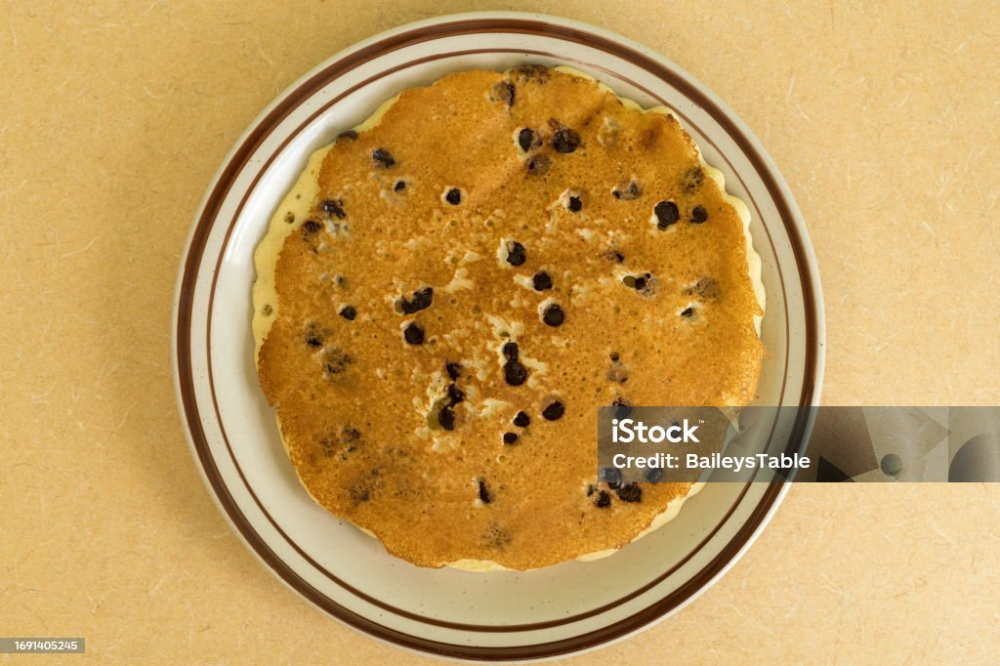

Home
Chocolate Chip Pancakes

Description
This pancake recipe makes dairy-free, high protein pancakes with melted chocolate chips.
Ingredients
- Pea Protein Powder
- Gluten-free pancake mix
- Dairy-free chocolate chips
- Oat Milk
- Sugar-free syrup
- Strawberry jam
- Eggs
Steps
- Combine 10 scoops of protein powder and 4 cups of gluten-free pancake mix in a mixer and blend to homogeneity
- Add 4 cups of oat milk, 1/2 cup o sugar-free syrup, 1/4 cup of strawberry jam, and 4 eggs to the mixer and blend well.
- Heat on a skillet over medium heat, flipping as necessary.
- Top with chocolate chips